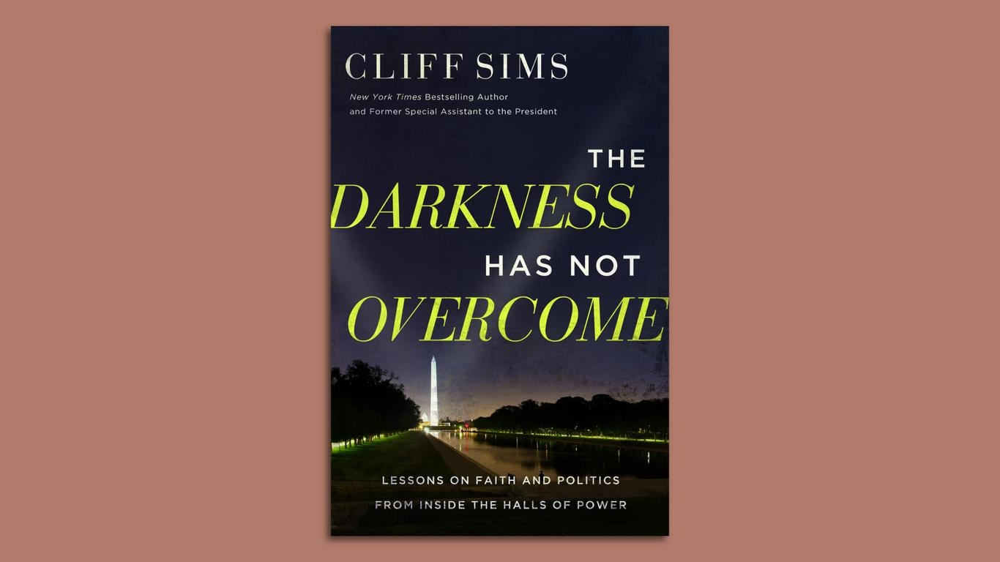

Former Trump official Cliff Sims plans page-turner on faith in D.C.Cliff Sims, a former top Trump White House and intelligence official, will be out May 7 with a behind-the-scenes book blending faith and cutthroat politics — "The Darkness Has Not Overcome: Lessons on Faith & Politics from Inside the Halls of Power." Why it matters: Sims tells me he was moved to write about "the importance of maintaining faith in a political environment — and in a city, Washington, D.C. — where faith is always tested." Sims, the son of a Baptist minister, says he'll take readers "inside some of the most secretive places in America — including top secret doomsday bunkers, the president's nuclear football, and the halls of the CIA and Office of Director of National Intelligence." The title comes from the Gospel of John: "The light shines in the darkness, and the darkness has not overcome it." (John 1:5) Between the lines: The book targets an overlapping audience of political conservatives (especially those in former President Trump's base) and evangelical Christians, who play a big role in election outcomes. What they're saying: Sims' book is endorsed by some of the biggest names in conservative America. Former Director of National Intelligence John Ratcliffe: "Cliff gives readers a rare look into a world that most people only see in movies ... and he does it while providing practical faith lessons." Sen. J.D. Vance (R-Ohio): "Politics is a cutthroat but ultimately temporal game, and Cliff Sims has played it at the highest level. 'The Darkness Has Not Overcome' is full of indispensable lessons on how to view politics through an eternal lens." Donald Trump Jr.: "My friend Cliff Sims has been through the fire and lived to tell about it." Of note: Sims was recently appointed by House Speaker Mike Johnson as a commissioner on the U.S.–China Economic and Security Review Commission. The book was repped by Sims' longtime agent, Matt Latimer of Javelin. |
 |